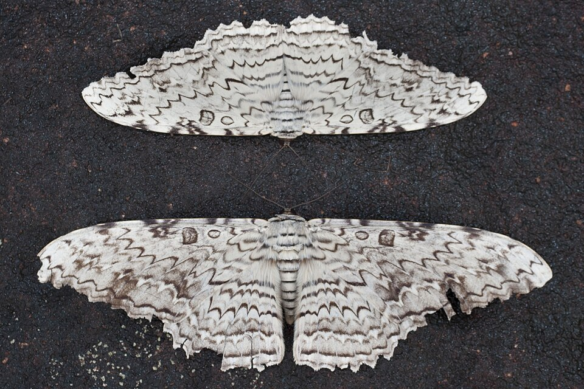

Совка Агриппина, Белая Ведьма (лат. Thysania Agrippina) — вид бабочек из семейства Erebidae.
Совка Агриппина считается самой большой бабочкой по размаху крыльев, хотя некоторые бебочки превосходят ее по их площади.
Описание
Основной фон крыльев — белый или светло-серый, на котором располагается узор, образованный из чередующихся тёмных (обычно бурых и коричневых) пятен-мазков. В окраске крыльев представлен чёткий рисунок из тёмно-коричневых линий и перевязей. Предкраевая линия извилистая. Окраска варьирует у различных особей данного вида: у одних из них коричневый узор является более выраженным, чем у других, порой доминируя над белым фоном крыльев. Нижняя сторона тела тёмно-коричневая с белыми пятнами, у самцов с металлическим фиолетово-синим блеском[4][5].
Распостранение
Распространена в Центральной и Южной Америке[4][1][3], а также в Мексике. Считается мигрантом из более южных регионов в штате Техас (США)[10]. Типичным местом обитания данного вида является сельва Южной Америки[4].